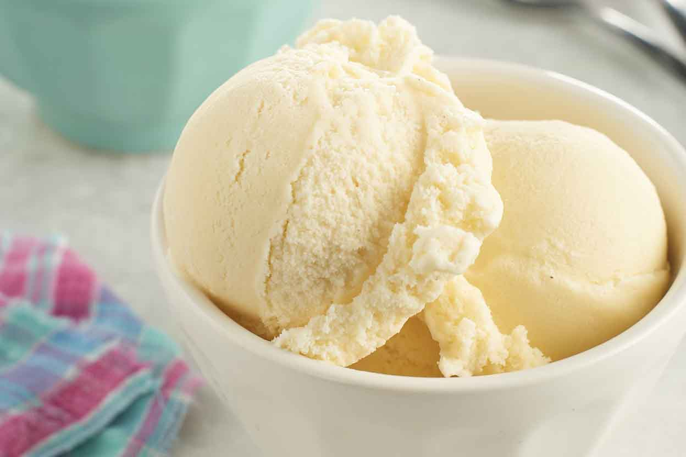
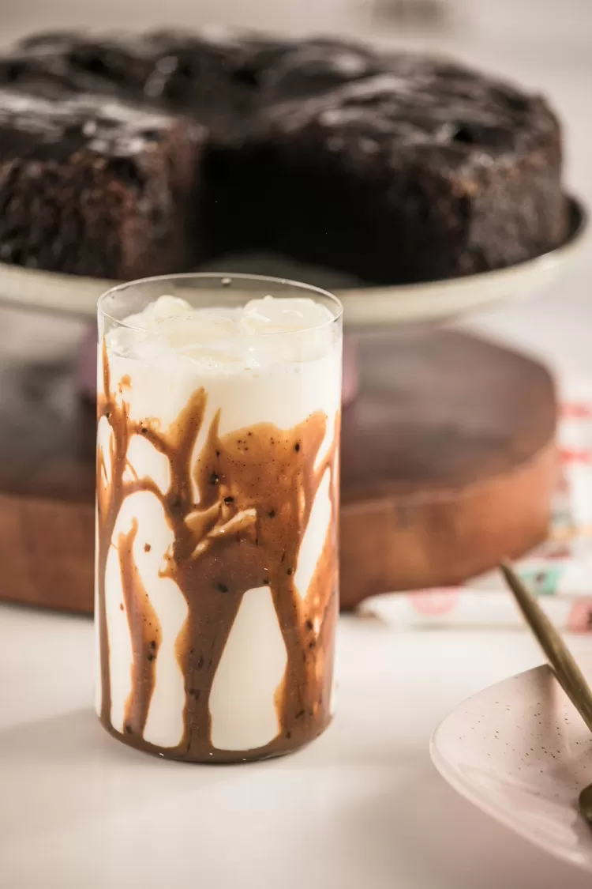
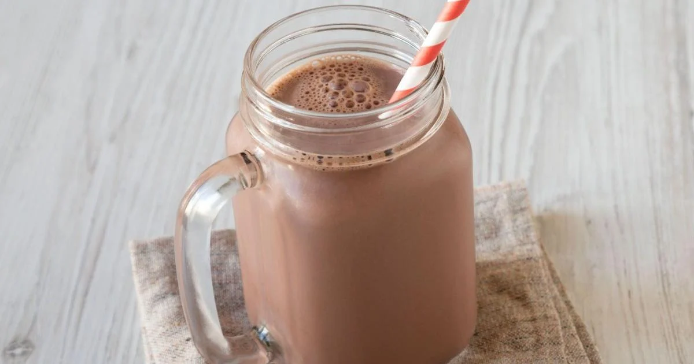

Sorvete caseiro!

Ingredientes!
- 500 ml de leite integral
- 1/2 lata de leite condensado
- Uma colher de pó de sorvete
- 1 colher de emulsificante
- 1 cx creme de leite
- 10 colheres de açúcar
- 1 colher de liga neutra
Modo de fazer!
- Bata no liquidificador o leite, creme de leite, leite condensado, açúcar, pó para sorvete, e a liga neutra, por 5 minutos em alta rotação, essa mistura chamaremos de base.
- Congele a base.
- Após congelada, corte-a em pequenos pedaços e coloque na batedeira com o emulsificante
- Bata por aproximadamente 6 minutos em velocidade baixa até que fique lisa e congele novamente.
- Ao congelar, estará pronta para servir.
Café gelado!

Ingredientes!
- 1 colher de sopa de café solúvel
- 1 colher de sopa de água fervente
- 2 colheres de sopa de doce de leite
- 200 Ml de leite
- Raspas de laranja
- Gelo
Modo de fazer!
- Colocar o café e uma colher de água fervente e mexer bem.
- Acrescentar o doce de leite e as raspas de laranja
- Colocar o gelo e o leite em um copo grande
- Despejar o creme de café e doce de leite no copo e mexer levemente
- Finalizar com as raspas de laranja
Milk Shake!

Ingredientes!
- 3 bolas de sorvete de chocolate
- 1 colher de chá de essência de baunilha
- 2 e 1/2 xícaras de leite gelado
- Cobertura de sabor de preferência
Modo de fazer!
- Bata todos os ingredientes, menos a cobertura no liquidificador.
- Espalhe um pouco da cobertura em seu copo de escolha.
- Coloque o milk shake na taça!